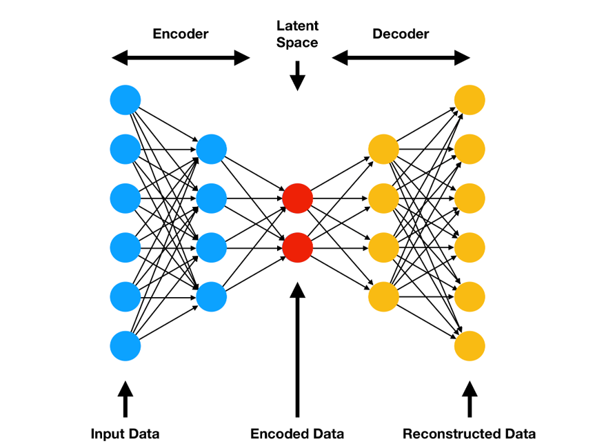
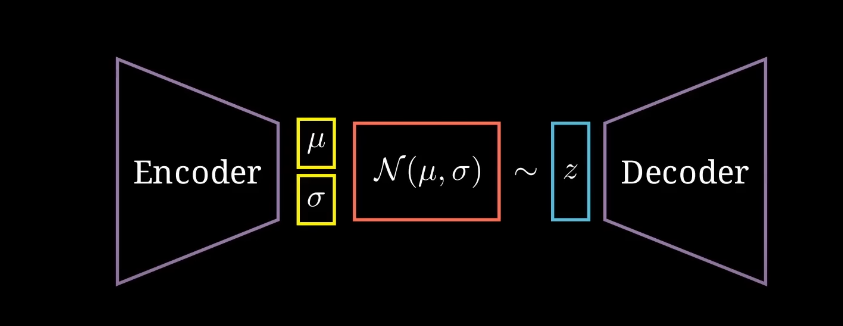
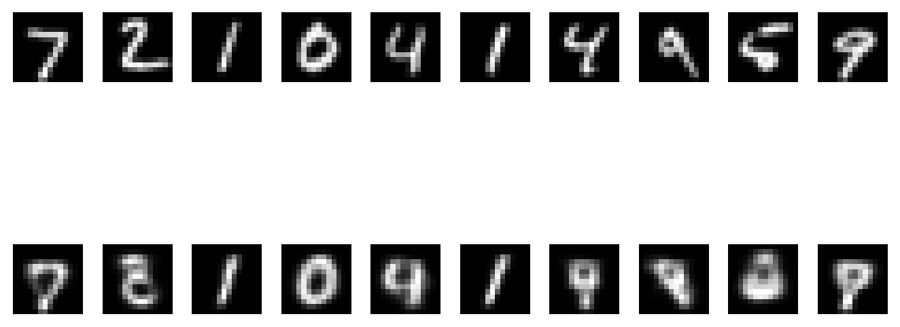
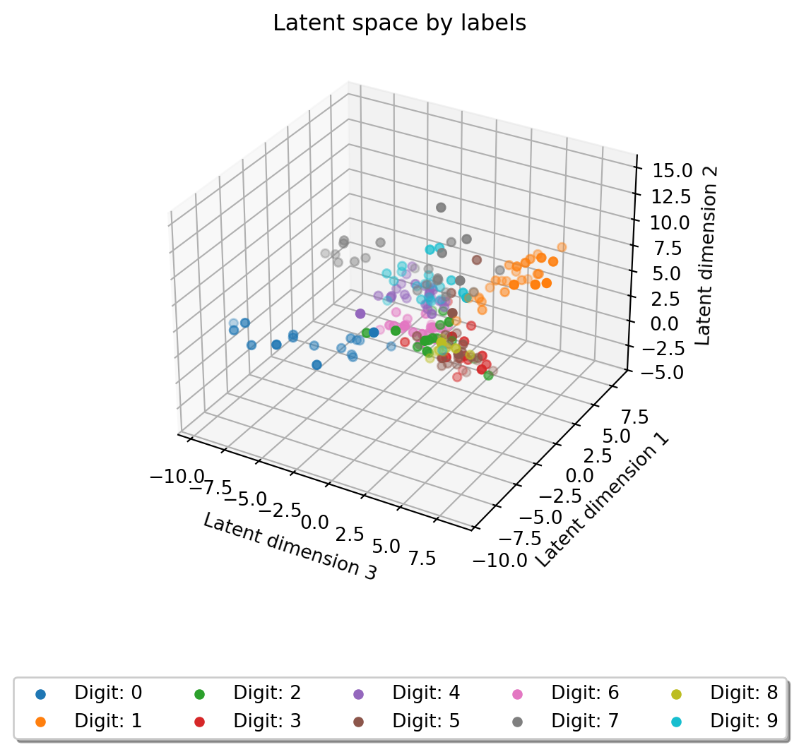
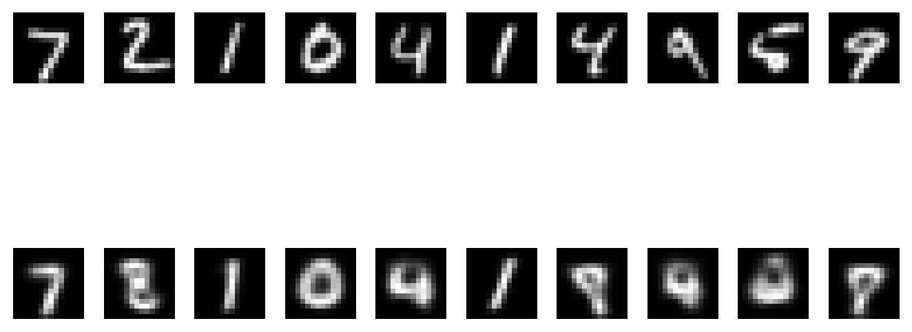
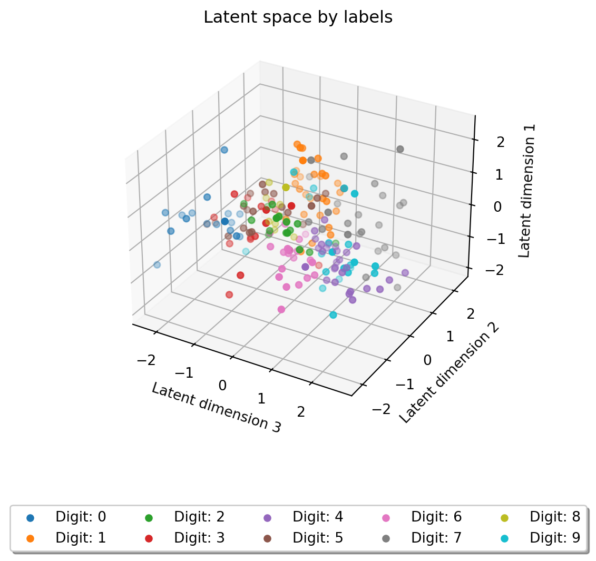

So far we’ve covered the regression and classification problems of machine learning. In this section we’ll cover a third type of machine learning problem: dimension reduction. The neural network architecture that we’ll use for this problem is called an autoencoder.
Architecture
Autoencoders are a type of neural network that are trained to reconstruct their input. They are composed of two parts: an encoder and a decoder. The encoder takes an input from the feature space (\(\mathcal{X}\)) and compresses it into a lower dimensional representation called the latent space (\(\mathcal{Z}\)). The latent space is typically a subset of \(\mathbb{R}^k\), where k is a user-defined hyperparameter. The decoder takes this lower dimensional representation and reconstructs the original input.
Mathematically, the encoder and decoder can be represented as follows:
The following figure shows the architecture of an autoencoder:

The goal of training an autoencoder is to minimize the reconstruction error, which is the difference between the original input and the reconstructed output. This is typically the MSE loss.
However, one key problem with autoencoders is that the latent space they generate is often meaningless and sparse. This makes it inneffective if we want to reduce out dimensionality to use in a further model.
Variational Autoencoders
One thing we can do to mitigate this problem is to regularize the latent space. This is where Variational Autoencoders (VAEs) come in. Variational Autoencoders are a type of autoencoder that use a probabilistic approach to learn a latent space. The idea is to learn a distribution over the latent space, rather than a fixed set of points. The variational autoecoder now has 3 components:
Where \(\mathcal{\Theta}\) represents the parameter space of the underlying of the distribution. This underlying distribution is typically a Gaussian distribution. However, instead of learning these parameters directly, we use KL-Divergence to regularize the latent space.
The follwing diagram shows the structure of a VAE:

The prefered latent space is a multivariate Gaussian distribution with \(\mu = 0\) and \(\Sigma = I\). Thus, the loss function with regularization becomes:
Where \(\mu_k\) and \(\sigma_k\) are the mean and standard deviation of the \(k\)th latent variable. Using a VAE has the benefit of making our latent space compact, which means a convex combination of the latent points will still be a valid latent point.
Limitations
Both Autoencoders and VAEs have some limitations. For example, they are prone to vanishing and exploding gradients, overfitting, and the doubling of the layers implies a doubling of the parameters. Nonetheless, they are still very useful for dimensionality reduction, however, they might require some careful tunning to get the best results.
PyTorch
Once again, we will use the MNIST dataset to train our autoencoders. This means we’ll need to use a convolutional neural network to build our autoencoder.
Libraries and data
import torchimport torch.nn as nnimport torch.nn.functional as Fimport torchvisionimport torchvision.transforms as transformsimport osfrom tqdm import trangedevice = torch.device("cuda"if torch.cuda.is_available() else"cpu")# Load and normalize the training and test setstransform = transforms.Compose([ transforms.RandomHorizontalFlip(p=0.5), transforms.RandomRotation(10), transforms.Resize((14,14)), transforms.ToTensor(), transforms.Normalize((0.5,), (0.5,)),])transform2 = transforms.Compose([ transforms.Resize((14,14)), transforms.ToTensor(), transforms.Normalize((0.5,), (0.5,)),])# Load the MNIST datasettrainset = torchvision.datasets.MNIST( root='./data', train=True, # training set download=True, transform=transform)testset = torchvision.datasets.MNIST( root='./data', train=False, # testing set download=True, transform=transform2)
Autoencoder
While we are dealing with images, the added depth of having both an encoder and decoder makes CNN-based autoencoders very prone to vanishing/exploding gradients. To avoid this, we will use a simple MLP-based autoencoder with a subsampling step to reduce the images to 14x14 once again.
The following code shows the architecture of the autoencoder. As discussed it has an encoder and a decoder that basically the encoder in reverse. To better improve the decoder’s ability to undo the encoder’s operation, we use LeakyReLU activation functions instead of ReLU. Finally, since the images range from -1 to 1 after the normalization pre-processing step, we use the Tanh activation functions in the decoder to map the output back to the same range.
# hyperparametersbatch_size =64num_epochs =20learning_rate =0.001# Create the modelmodel = MNISTAutoEncoder(3).to(device)# Define the loss function and the optimizercriterion = nn.MSELoss()optimizer = torch.optim.Adam(model.parameters(), lr=learning_rate)# Train the modeltrainloader = torch.utils.data.DataLoader(trainset, batch_size=batch_size, shuffle=True)if os.path.exists("models/mnist_autoencoder.pth"): state_dict = torch.load("models/mnist_autoencoder.pth", weights_only=False) model.load_state_dict(state_dict)else:# Train the model model.train()for epoch in trange(num_epochs):for images, _ in trainloader: images = images.to(device)# Forward pass outputs = model(images) loss = criterion(outputs, images) # reconstruction loss# Backward and optimize optimizer.zero_grad() loss.backward() optimizer.step()# save model torch.save(model.state_dict(), "models/mnist_autoencoder.pth")
Here we can observe some test images and their reconstructions:
Original vs Reconstructed images
import matplotlib.pyplot as plt# Test the modelmodel.eval()testloader = torch.utils.data.DataLoader(testset, batch_size=10, shuffle=False)with torch.no_grad():for images, _ in testloader: images = images.to(device) outputs = model(images)breakimages = images.cpu()outputs = outputs.cpu()# Plot the original images and their reconstructionsfig, axs = plt.subplots(2, 10)for i inrange(10): axs[0, i].imshow(images[i].squeeze(), cmap='gray') axs[0, i].axis('off') axs[1, i].imshow(outputs[i].squeeze(), cmap='gray') axs[1, i].axis('off')plt.tight_layout()plt.show()

We can see that 0’s, 1’s, 4’s and 7’s get reconstructed pretty well, but other digits become a blurry mess. Let’s take a look at the latent space of the autoencoder for further insight. The following code shows the latent space of the autoencoder color coded by labels:
Latent space
# Plot the latent spacetestloader = torch.utils.data.DataLoader(testset, batch_size=200, shuffle=False)with torch.no_grad():for images, labels in testloader: images = images.to(device) z = model.encode(images)breakz = z.cpu()labels = labels.cpu()fig = plt.figure()ax = fig.add_subplot(projection='3d')for i inrange(10): ax.scatter(z[labels == i, 2], z[labels == i, 0], z[labels == i, 1], label=f'Digit: {i}')ax.set_xlabel('Latent dimension 3')ax.set_ylabel('Latent dimension 1')ax.set_zlabel('Latent dimension 2')plt.legend(bbox_to_anchor=(0.5, -0.2), loc='upper center', fancybox=True, shadow=True, ncol=5)plt.title('Latent space by labels')plt.show()

As we can see digits 0 and 1 are very spread out from the data, 7 is moderately spread, but the rest is just a blob. This spread-out latent space is not very useful for further machine learning tasks. Adding more dimensions would help with the clumping issue, but not so much with the spreading issue. Let’s see how a variational autoencoder performs.
Variational Autoencoder
The variational autoencoder has a very similar architecture to the previous autoencoder, but with a few key differences. We have to chop off the last layer of the encoder to allow for the bifurcation into the mean and variance of the latent space. What changes most significantly however, is the forward pass. We have to sample from the latent space using the mean and variance of the encoder output. Note that for stability reasons it’s better to learn the log variance instead of the variance itself and transform as needed.
# hyperparametersbatch_size =64num_epochs =20learning_rate =0.001# Create the modelmodel2 = MNISTVAE(3).to(device)# Define the loss function and the optimizerdef loss_function(x_hat, x, mean, log_var): reproduction_loss = nn.functional.mse_loss(x_hat, x, reduction='sum') KLD =-0.5* torch.sum(1+ log_var - mean.pow(2) - log_var.exp())return reproduction_loss + KLDcriterion = loss_functionoptimizer = torch.optim.Adam(model2.parameters(), lr=learning_rate)# Train the modeltrainloader = torch.utils.data.DataLoader(trainset, batch_size=batch_size, shuffle=True)if os.path.exists("models/mnist_vae.pth"): state_dict = torch.load("models/mnist_vae.pth", weights_only=False) model2.load_state_dict(state_dict)else:# Train the model model2.train()for epoch in trange(num_epochs):for images, _ in trainloader: images = images.to(device)# Forward pass outputs, mean, log_var = model2(images) loss = criterion(outputs, images, mean, log_var)# Backward and optimize optimizer.zero_grad() loss.backward() optimizer.step()# save model torch.save(model2.state_dict(), "models/mnist_vae.pth")
Let’s take another look at the reconstructed images.
Original vs Reconstructed images
# Test the modelmodel2.eval()testloader = torch.utils.data.DataLoader(testset, batch_size=10, shuffle=False)with torch.no_grad():for images, _ in testloader: images = images.to(device) outputs, _, _ = model2(images)breakimages = images.cpu()outputs = outputs.cpu()# Plot the original images and their reconstructionsfig, axs = plt.subplots(2, 10)for i inrange(10): axs[0, i].imshow(images[i].squeeze(), cmap='gray') axs[0, i].axis('off') axs[1, i].imshow(outputs[i].squeeze(), cmap='gray') axs[1, i].axis('off')plt.tight_layout()plt.show()

It seems like it’s doing worse, images are blurrier and 4’s don’t get reconstructed as well. Let’s take a look at the latent space to see if we can find any patterns.
Latent space
# Plot the latent spacetestloader = torch.utils.data.DataLoader(testset, batch_size=200, shuffle=False)with torch.no_grad():for images, labels in testloader: images = images.to(device) z = model2.encode(images, mode="deterministic")breakz = z.cpu()labels = labels.cpu()fig = plt.figure()ax = fig.add_subplot(projection='3d')for i inrange(10): ax.scatter(z[labels == i, 2], z[labels == i, 1], z[labels == i, 0], label=f'Digit: {i}')ax.set_xlabel('Latent dimension 3')ax.set_ylabel('Latent dimension 2')ax.set_zlabel('Latent dimension 1')plt.legend(bbox_to_anchor=(0.5, -0.2), loc='upper center', fancybox=True, shadow=True, ncol=5)plt.title('Latent space by labels')plt.show()

We can observe that the latent space is not as clumped and no digits are significanly separated from the rest of the data. The data also seems to look very compact, which is a good if we want to use the data for a further machine learning task.
Another advantage of variational autoencoders is that a dimension of the latent space might convey some meaning as shown in this colab notebook by Reza Kalantar. (Note that the author confuses the dimensions of the latent space with the parameters of the distribution, which is not correct).
Autoencoders are a powerful tool for dimensionality reduction and data compression. They can be used for a variety of tasks, including anomaly detection, image compression, and feature extraction. They also show how flexible neural networks can be if defined properly. Hopefully this shows a glimpse into the power of neural networks and how they can be used for a variety of tasks.